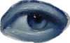
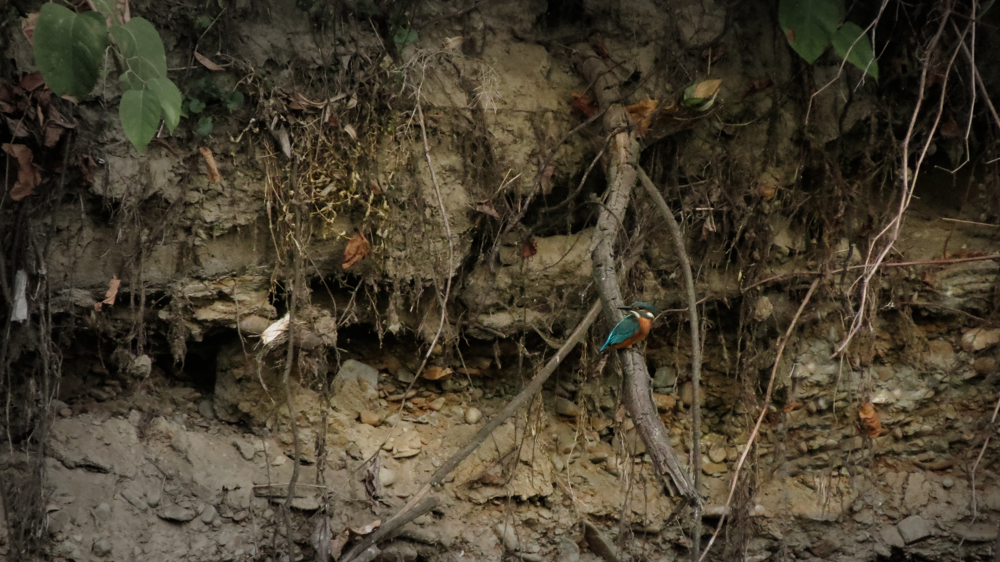
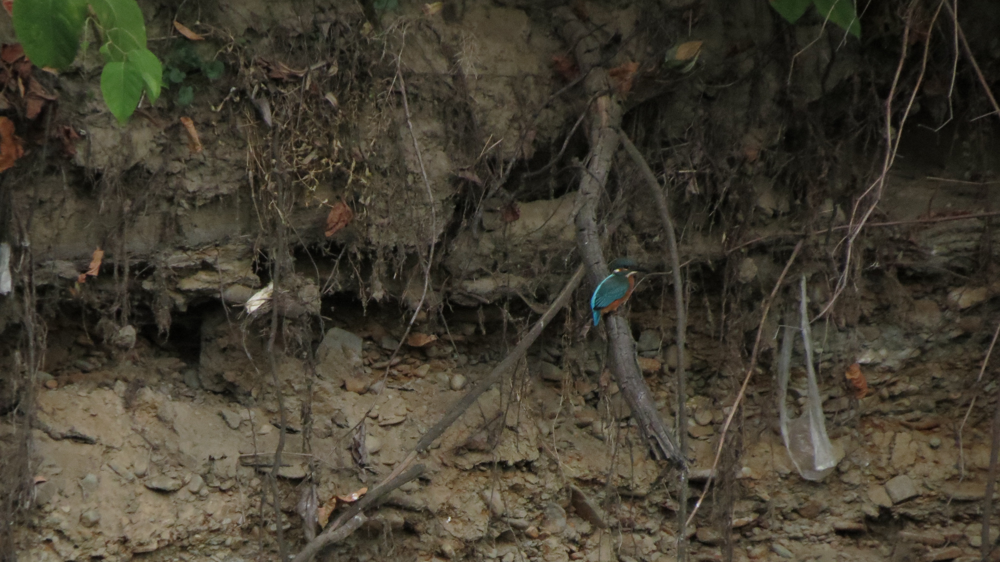
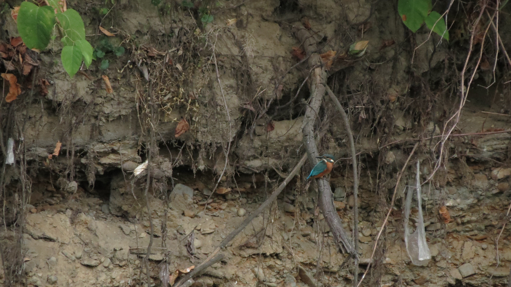
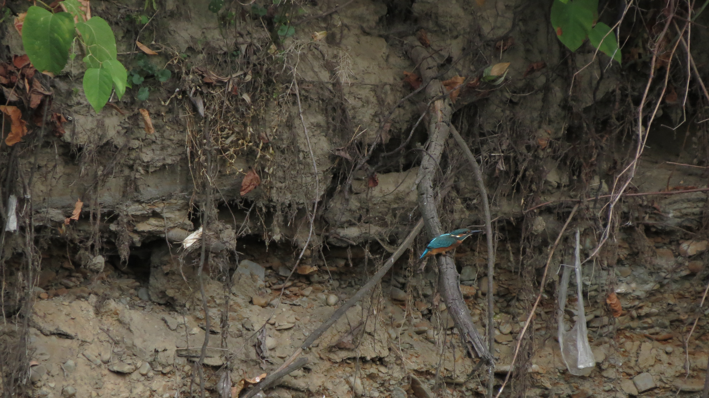
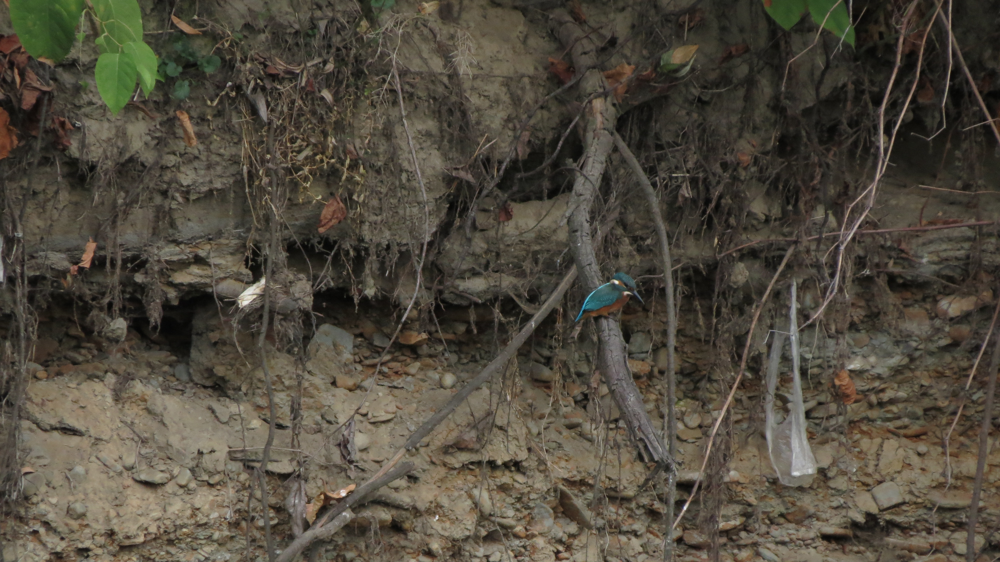
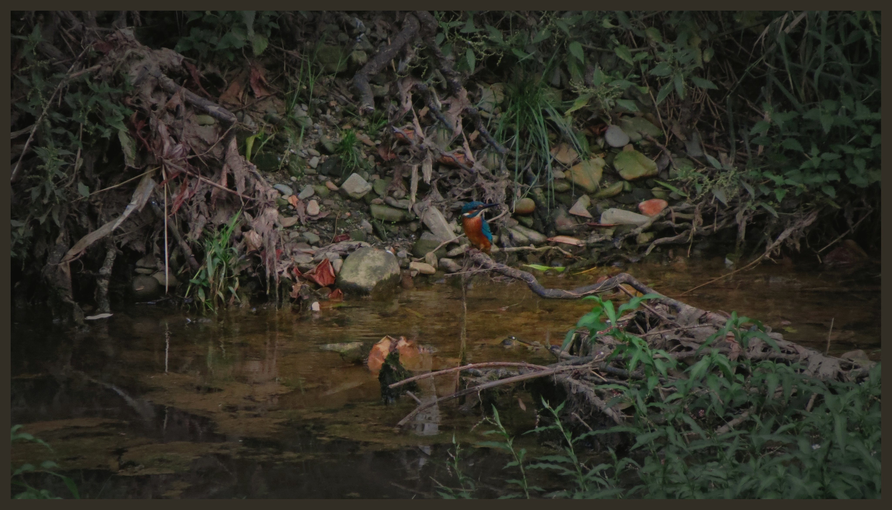
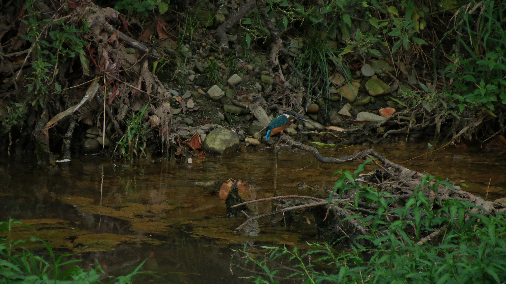
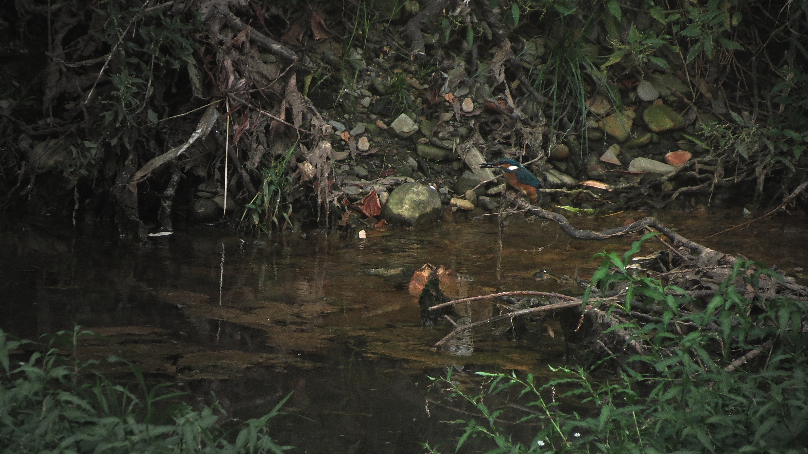
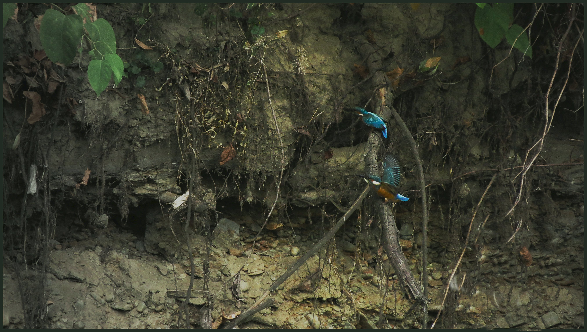

Zacmienie


Powrót */--------------------------------------------------------------------------------------------------------------------------Zacmienie
12 Sierpnia 2026 odbyło sie całkowite zaćmienie słońca, które miałem przywilej obserwować w znakomitych warunkach nad zaporą aż do samego maksimum, ponieważ nic nie zasłaniało tego trudnego w obserwacji zaćmienia. Było to najłębsze zaćmienie od 1999 widoczne z Polski i nagłębsze do 20xx roku, niesamowita sprawa. Miejscówka pod względem wizualnym była idealna, jedyym mankamentem była masa ludzi, co nie powinno dziwić. Udało mi się zrobić kilka przyzwoitych, choć nieidalnych zdjęć, które zamieszczam poniżej. Jako filtra po raz pierwszy, eksperymentlanie użyłem okopconej szybki (zdaję sobie sprawę z tego jak nieprofesjonalne to jest), która o dziwo bardzo dobrze spisała się w początkowych fazach zaćmienia, kiedy słońce było jeszcze tak jasne, że normalnie nie byłoby możliwości zrobić jakkolwiek wyraźnych zdjęć.








